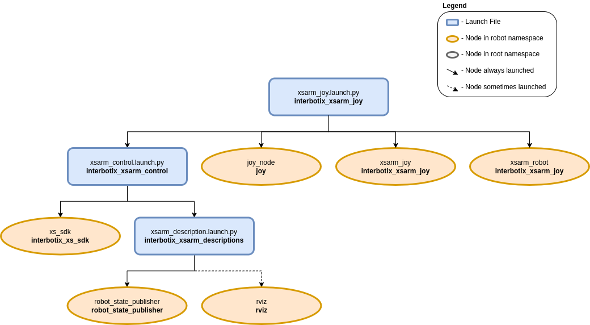

Joystick Control
 View Package on GitHub
View Package on GitHub
Overview
This package can be used to control the movements of any X-Series robotic arm using a SONY PS3/PS4 controller or Microsoft Xbox360 controller (untested) via Bluetooth. In this demo, the ‘arm’ joints are set to work in ‘position’ control mode while the gripper operates in ‘PWM’ mode. Refer to the joystick button map below to see how to operate the robot. Specifically, some of the joystick controls manipulate individual joints while others are used to perform ‘inverse kinematics’ on all the joints to get the end-effector of the robot (defined at ‘ee_gripper_link’) to move as if it’s in Cartesian space. This is done using the modern_robotics code library offered by Northwestern University.
Structure
As shown above, the interbotix_xsarm_joy package builds on top of the interbotix_xsarm_control package. To get pointers about the nodes in that package, please look at its README. The other nodes are described below:
- joy - a ROS driver for a generic Linux joystick; it reads data from a joystick over
Bluetooth and publishes sensor_msgs/msg/Joy messages to the
commands/joy_rawtopic - xsarm_joy - responsible for reading in raw sensor_msgs/msg/Joy messages from the
commands/joy_rawtopic and converting them into ArmJoy messages; this makes the code more readable and allows users to remap buttons very easily later. - xsarm_robot - responsible for reading in ArmJoy messages and sending joint and gripper commands to the xs_sdk node; while the ‘waist’ joint can be directly controlled via the PS3/PS4 joystick, other buttons allow position-ik to be performed using all the arm joints.
Usage
After pairing your Bluetooth joystick controller using the Pairing Your Controller Guide, type the following in a terminal (let’s say to control the WidowX-200 arm):
$ ros2 launch interbotix_xsarm_joy xsarm_joy.launch.py robot_model:=wx200
A red error message might appear in the screen saying Couldn't open joystick force feedback!.
This is normal and will not affect the joystick operation. To further customize the launch file at
run-time, look at the table below:
| Argument | Description | Default | Choices |
|---|---|---|---|
| robot_model | model type of the Interbotix Arm such as wx200 or rx150. |
px100, px150, rx150, rx200, wx200, wx250, wx250s, vx250, vx300, vx300s, mobile_px100, mobile_wx200, mobile_wx250s |
|
| robot_name | name of the robot (typically equal to robot_model, but could be anything). |
LaunchConfig(robot_model) |
|
| use_rviz | launches RViz if set to true. |
true |
true, false |
| mode_configs | the file path to the ‘mode config’ YAML file. | LocalVar(‘FindPackageShare(pkg= interbotix_xsarm_joy) + ‘config’ + ‘modes.yaml’’) |
|
| threshold | value from 0 to 1 defining joystick sensitivity; a larger number means the joystick should be less sensitive. | 0.75 |
|
| controller | type of controller. | ps4 |
ps4, ps3, xbox360 |
| launch_driver | true if xsarm_control should be launched - set to false if you would like to run your own version of this file separately. |
true |
true, false |
| use_sim | if true, the DYNAMIXEL simulator node is run; use RViz to visualize the robot’s motion; if false, the real DYNAMIXEL driver node is run. |
false |
true, false |
| base_link_frame | name of the ‘root’ link on the arm; typically base_link, but can be changed if attaching the arm to a mobile base that already has a base_link frame. |
base_link |
|
| use_gripper | if true, the default gripper is included in the robot_description parameter; if false, it is left out; set to false if not using the default gripper. |
true |
true, false |
| show_ar_tag | if true, the AR tag mount is included in the robot_description parameter; if false, it is left out; set to true if using the AR tag mount in your project. |
false |
true, false |
| show_gripper_bar | if true, the gripper_bar link is included in the robot_description parameter; if false, the gripper_bar and finger links are not loaded. Set to false if you have a custom gripper attachment. |
true |
true, false |
| show_gripper_fingers | if true, the gripper fingers are included in the robot_description parameter; if false, the gripper finger links are not loaded. Set to false if you have custom gripper fingers. |
true |
true, false |
| use_world_frame | set this to true if you would like to load a ‘world’ frame to the robot_description parameter which is located exactly at the ‘base_link’ frame of the robot; if using multiple robots or if you would like to attach the ‘base_link’ frame of the robot to a different frame, set this to false. |
true |
true, false |
| external_urdf_loc | the file path to the custom urdf.xacro file that you would like to include in the Interbotix robot’s urdf.xacro file. | ||
| hardware_type | configures the robot_description parameter to use the actual hardware, fake hardware, or hardware simulated in Gazebo. |
actual |
actual, fake, gz_classic |
| robot_description | URDF of the robot; this is typically generated by the xacro command. | Command(FindExec(xacro) + ‘ ‘ + LocalVar(‘FindPackageShare(pkg= interbotix_xsarm_descriptions) + ‘urdf’ + LaunchConfig(robot_model)’) + ‘.urdf.xacro ‘ + ‘robot_name:=’ + LaunchConfig(robot_name) + ‘ ‘ + ‘base_link_frame:=’ + LaunchConfig(base_link_frame) + ‘ ‘ + ‘use_gripper:=’ + LaunchConfig(use_gripper) + ‘ ‘ + ‘show_ar_tag:=’ + LaunchConfig(show_ar_tag) + ‘ ‘ + ‘show_gripper_bar:=’ + LaunchConfig(show_gripper_bar) + ‘ ‘ + ‘show_gripper_fingers:=’ + LaunchConfig(show_gripper_fingers) + ‘ ‘ + ‘use_world_frame:=’ + LaunchConfig(use_world_frame) + ‘ ‘ + ‘external_urdf_loc:=’ + LaunchConfig(external_urdf_loc) + ‘ ‘ + ‘hardware_type:=’ + LaunchConfig(hardware_type) + ‘ ‘) |
To understand how the joystick buttons map to controlling the robot, look at the diagram and table below. Note that while the Xbox360 has a slightly different naming convention, the button placement is essentially the same:

| Button | Action |
|---|---|
| START/OPTIONS | move robot arm to its Home pose |
| SELECT/SHARE | move robot arm to its Sleep pose |
| R2 | rotate the ‘waist’ joint clockwise |
| L2 | rotate the ‘waist’ joint counterclockwise |
| Triangle | increase gripper pressure in 0.125 step increments (max is 1) |
| X | decrease gripper pressure in 0.125 step increments (min is 0) |
| O | open gripper |
| Square | close gripper |
| D-pad Up | increase the control loop rate in 1 Hz step increments (max of 40) |
| D-pad Down | decrease the control loop rate in 1 Hz step increments (min of 10) |
| D-pad Left | coarse’ control - sets the control loop rate to a user-preset ‘fast’ rate |
| D-pad Right | fine’ control - sets the control loop rate to a user-preset ‘slow’ rate |
| Right stick Up/Down | increase/decrease pitch of the end-effector |
| Right stick Left/Right | increase/decrease roll of the end-effector |
| R3 | reverses the Right stick Left/Right control |
| Left stick Up/Down | move the end-effector (defined at ‘ee_gripper_link’) vertically in Cartesian space |
| Left stick Left/Right | move the end-effector (defined at ‘ee_gripper_link’) horizontally in Cartesian space |
| L3 | reverses the Left stick Left/Right control |
| R1 | if the arm has 6dof, this moves the end-effector in a negative direction along its own ‘y’ axis |
| L1 | if the arm has 6dof, this moves the end-effector in a positive direction along its own ‘y’ axis |
| PS | if torqued on, holding for 3 seconds will torque off the robot; if torqued off, tapping the button will torque on the robot |